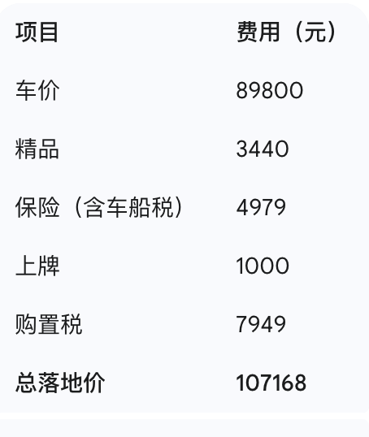

我的车库里停着一辆充满意式风情的玛莎拉蒂莱万特 3.0T。当初选择它，很大程度上是源于那颗跳动着法拉利基因的心脏。毋庸置疑，这台发动机的表现令人血脉贲张，每一次加速都伴随着高亢的声浪，仿佛在低吼的雄狮。莱万特的底盘调校和硬件配置也堪称一流，ZF 的 8AT 变速箱平顺且聪明，偏向后驱的四驱系统赋予了它不错的操控乐趣，再加上空气悬挂和底盘升降功能，无论是城市道路还是偶尔的郊外撒野，都能提供十足的驾驶乐趣。当然，这份乐趣的代价也不菲，超过百万的落地价，几乎能买下十辆卡罗拉。
然而，激情过后终归要回归理性。莱万特最让我头疼的莫过于其惊人的用车成本。在拥堵的城市里穿梭，它的油耗轻轻松松就能突破 20L/百公里。这意味着，一箱 600 元的汽油，往往只能支撑我行驶 350 公里左右，算下来每公里的油费高达 1.7 元。频繁光顾加油站，以至于那里的工作人员都对我格外热情。更让人“肉痛”的是它的保养费用。仅仅是机油，就必须使用 10W-60 这种法拉利定制的型号，4S 店的价格高达 600 元/升，而我的莱万特一次保养需要 8 升，光机油就要 4800 元。至于变速箱油、刹车油、差速器油等其他养护项目，价格更是令人咋舌。每次去 4S 店保养，都像经历一次小型经济危机。
在如此高昂的用车成本面前，我渐渐不舍得频繁驾驶莱万特。在市内短途出行，甚至觉得打车可能更加划算。因此，经过一番深思熟虑，我决定为家庭增添一辆丰田卡罗拉混动。选择它的核心原因只有一个：极低的用车成本。
这辆卡罗拉混动在城市工况下的油耗基本在 4L/百公里左右，折合下来每公里油费仅 3-4 毛钱，仅仅是莱万特的四分之一！更令人欣慰的是，它的保养费用和保险费用也相对亲民，与豪华车相比，几乎可以忽略不计。
如今经济下行，创业维艰，每一分钱都显得格外重要。对于正处于事业起步阶段的我来说，一辆经济实用的家庭用车，能够有效控制家庭开支，无疑是一个明智的选择。卡罗拉混动凭借其出色的燃油经济性和可靠性，成为了我的不二之选。
以下是我这辆卡罗拉混动精英版的购车费用明细：
这辆卡罗拉混动，或许没有莱万特那般澎湃的激情，但它却能为我的家庭带来实实在在的经济效益和安心的出行保障。豪华座驾承载着梦想与激情，而这辆卡罗拉混动，则承载着我对家庭的责任与对未来的理性规划。我相信，在未来的日子里，它将成为我们生活中可靠的伙伴。